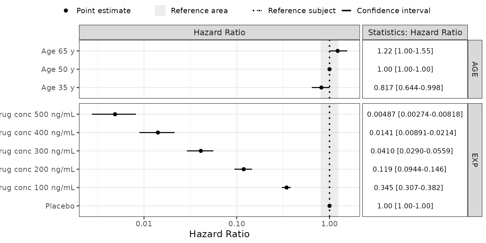
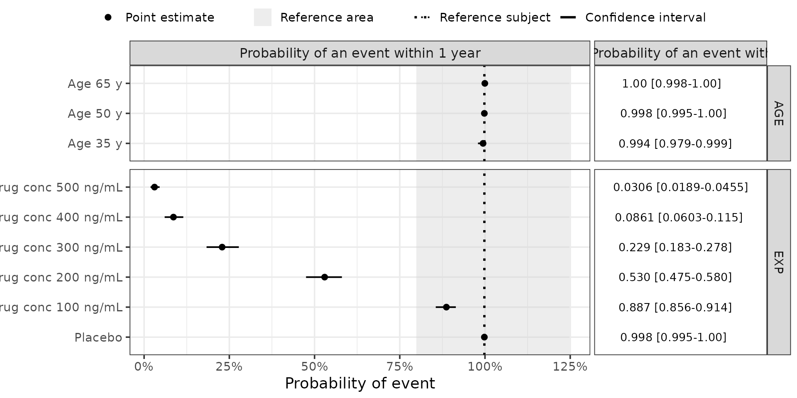

3. Deep Dive: Forest Plots for Time-to-Event Models
Part3-deep-dive-tte-models.Rmd
suppressPackageStartupMessages({
library(PMXForest)
library(ggplot2)
})
theme_set(theme_bw(base_size = 14))
theme_update(plot.title = element_text(hjust = 0.5))
set.seed(865765)Introduction
This vignette builds a Forest plot from a time-to-event (TTE) model. The workflow is the parametric SCM workflow of the Walkthrough, with two differences specific to TTE models:
- the quantities plotted are the hazard ratio relative to a reference subject and the probability of an event within one year;
- computing the event probability requires translating the NONMEM parameterisation of the event-time distribution (Weibull here) into the parameterisation R uses.
The covariate effects are assumed to enter the model as proportional hazards on the base hazard, \(h_0(t) \cdot e^{(\beta_1 x_1 + \beta_2 x_2 + \dots)}\).
1. Covariate values
dfCovs <- createInputForestData(
list(
"AGE" = c(35, 50, 65),
"EXP" = c(0, 100, 200, 300, 400, 500)
),
iMiss = -99
)
dfCovs
#> AGE EXP COVARIATEGROUPS
#> 1 35 -99 AGE
#> 2 50 -99 AGE
#> 3 65 -99 AGE
#> 4 -99 0 EXP
#> 5 -99 100 EXP
#> 6 -99 200 EXP
#> 7 -99 300 EXP
#> 8 -99 400 EXP
#> 9 -99 500 EXP
covnames <- c(
"Age 35 y", "Age 50 y", "Age 65 y",
"Placebo",
"Drug conc 100 ng/mL", "Drug conc 200 ng/mL", "Drug conc 300 ng/mL",
"Drug conc 400 ng/mL", "Drug conc 500 ng/mL"
)
stopifnot(length(covnames) == nrow(dfCovs))The reference subject is 50 years old and in the placebo group (exposure 0).
dfRefRow <- data.frame("AGE" = 50, "EXP" = 0)2. Parameter functions
Two functions are used so the hazard ratio and the event probability can be given different x-axis scales. paramFunctionCDF() calls paramFunctionHR(), and the extra arguments it needs (functHR, TIME) are passed through from getForestDFSCM().
Both functions guard for absent covariate columns and for the -99 indicator. That contract — and why the -99 guard is needed even when the data has no missing values — is set out in Preparing Forest plot inputs, Section 2.1.
## Hazard ratio relative to the reference subject
paramFunctionHR <- function(thetas, df, ...) {
RF <- 0
if (any(names(df) == "AGE") && df$AGE != -99) {
RF <- RF + (df$AGE - 50) * thetas[3]
}
EFF <- 0
if (any(names(df) == "EXP") && df$EXP != -99) {
EFF <- thetas[4] * df$EXP
}
exp(RF + EFF)
}
## Probability of an event up to time TIME
paramFunctionCDF <- function(thetas, df, functHR, TIME, ...) {
## Exponentiated covariate and exposure effects
COV <- functHR(thetas, df, ...)
## Translate the NONMEM parameterisation into the pweibull() parameterisation.
## This step is specific to how the model is written.
TH1 <- 1 / thetas[1]
TH2 <- thetas[2]
LAM <- ((1 / COV)^(1 / TH2)) * TH1
pweibull(TIME, TH2, LAM)
}
functionListNameHR <- c("Hazard Ratio")
functionListNameCDF <- c("Probability of an event within 1 year")Re-implementing the model in R duplicates code that already exists in the NONMEM control stream. Check the translation carefully — especially the distribution reparameterisation, which does not affect the hazard ratio but drives the event probability.
3. Parameter uncertainty
runno <- "tte_weibull"
extFile <- system.file("extdata", "tte", paste0(runno, ".ext"), package = "PMXForest")From the covariance step
The model has no random effects, so the OMEGA and SIGMA samples are set to zero.
covFile <- system.file("extdata", "tte", paste0(runno, ".cov"), package = "PMXForest")
dfSamplesCOV <- getSamples(covFile, extFile = extFile, n = 200)From a bootstrap
bootFile <- system.file(
"extdata", "tte", "bootstrap_tte_weibull_n500",
paste0("raw_results_", runno, ".csv"),
package = "PMXForest"
)
dfSamplesBS <- getSamples(bootFile, extFile = extFile)4. Forest plot data
noBaseThetas is 4 for this model. paramFunctionCDF() receives functHR and TIME as extra named arguments.
dfresHR <- getForestDFSCM(
dfCovs = dfCovs,
cdfCovsNames = covnames,
functionList = list(paramFunctionHR),
functionListName = functionListNameHR,
noBaseThetas = 4,
dfParameters = dfSamplesBS,
dfRefRow = dfRefRow,
cstrPackages = c("dplyr")
)
dfresCDF <- getForestDFSCM(
dfCovs = dfCovs,
cdfCovsNames = covnames,
functionList = list(paramFunctionCDF),
functionListName = functionListNameCDF,
noBaseThetas = 4,
dfParameters = dfSamplesBS,
dfRefRow = dfRefRow,
cstrPackages = c("dplyr", "stats"),
functHR = paramFunctionHR,
TIME = 365
)5. Plots
forestPlot(return = "plotList") gives the panel list, so a ggplot scale can be added before the panels are recombined with ggpubr::ggarrange().
Hazard ratios
The x-axis is on a log10 scale, so a halving (HR = 0.5) and a doubling (HR = 2) of the hazard sit the same distance from the reference.
plotList <- forestPlot(
dfresHR,
plotRelative = FALSE,
xlb = "Hazard Ratio",
return = "plotList",
sigdigits = 3,
strip_top_size = 12
)
plotList[[1]] <- plotList[[1]] + scale_x_continuous(trans = "log10")
ggpubr::ggarrange(
plotlist = plotList,
ncol = 2, nrow = 1,
widths = c(2, 0.7),
align = "h",
common.legend = TRUE
)
Probability of an event within a year
The x-axis is shown as a percentage.
plotList <- forestPlot(
dfresCDF,
plotRelative = FALSE,
xlb = "Probability of event",
return = "plotList",
sigdigits = 3,
strip_top_size = 12,
statisticsLabel = "Statistics"
)
plotList[[1]] <- plotList[[1]] + scale_x_continuous(labels = scales::percent)
ggpubr::ggarrange(
plotlist = plotList,
ncol = 2, nrow = 1,
widths = c(2, 0.7),
align = "h",
common.legend = TRUE
)